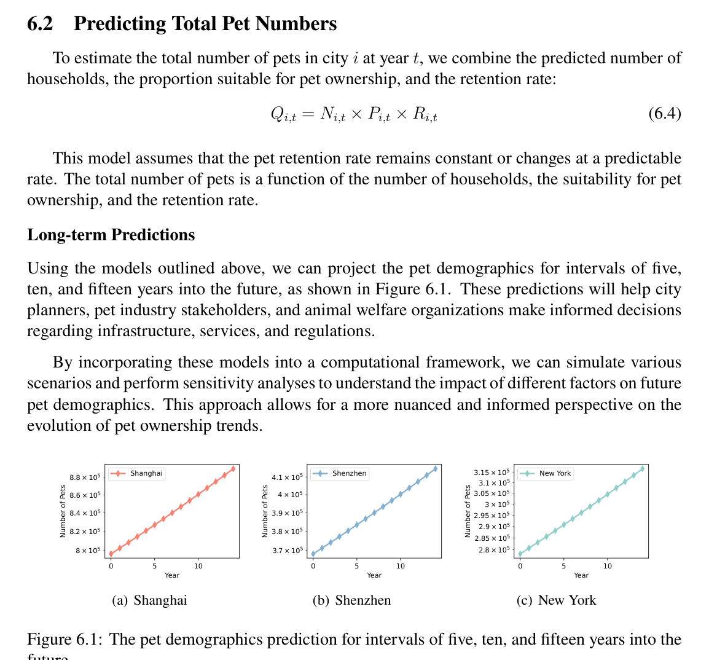

Session 4
Data and trend
Today you have thirty-five years of real data, and a question about a year that has not happened yet. You will decide what makes one line better than another, find the best line, use it to predict, and then test whether the prediction deserves to be believed.
Today's rule is the same. Write down what you are assuming before you calculate. No AI and no searching. One device per team, for the spreadsheet. From today I show you the problem and step back: the method is yours.
1Cold start
What will be the highest temperature recorded in Hong Kong in 2036?
- Team · 5 min No card and no hint. Restate the problem in your own words. Say exactly which number you are predicting, what data you would ask for, and what you will have to assume. The Modeller writes.
2The data
The highest temperature recorded in Hong Kong in each year, in °C: the single hottest reading of the year, not an average. Source: Hong Kong Observatory, as printed in the worksheet.
| Year | °C | Year | °C | Year | °C | Year | °C | Year | °C |
|---|---|---|---|---|---|---|---|---|---|
| 1990 | 36.1 | 1997 | 33.2 | 2004 | 34.6 | 2011 | 35.0 | 2018 | 35.4 |
| 1991 | 34.3 | 1998 | 34.4 | 2005 | 35.4 | 2012 | 34.5 | 2019 | 35.1 |
| 1992 | 34.5 | 1999 | 35.1 | 2006 | 34.2 | 2013 | 34.9 | 2020 | 35.3 |
| 1993 | 34.2 | 2000 | 34.2 | 2007 | 34.7 | 2014 | 34.6 | 2021 | 36.1 |
| 1994 | 34.6 | 2001 | 34.0 | 2008 | 34.6 | 2015 | 36.3 | 2022 | 36.1 |
| 1995 | 33.7 | 2002 | 34.3 | 2009 | 34.9 | 2016 | 35.6 | 2023 | 36.1 |
| 1996 | 34.3 | 2003 | 34.5 | 2010 | 34.6 | 2017 | 36.6 | 2024 | 35.7 |
Which line is best? In Session 3 you had to say what "best" means for a sport. Today you have to say it for a line.
Team time: 35 minutes. The card gives the data and the rules. The method is yours. You will not finish every question; the proof and the test on hidden years matter most.
- Modeller Say exactly which number you are predicting, and write what your model assumes about the future.
- Data lead Open the sheet I shared: years since 1990 are in column A and temperatures in column B. Draw a scatter chart to the Paper Standards: a numbered title, both axes labelled with units, and the source underneath.
- Team Find the straight line that fits the data best. First decide what "best" means for a line. Write your rule in one sentence, so that another team could use it to check your line. Then find the line.
- Writer Write the prediction as a sentence: "Based on our model, the highest temperature in Hong Kong in 2036 will be about … °C, plus or minus …" To choose the "plus or minus", look at how far real years have been from your line. Bring me the slope and the prediction.
- Every team Mathematicians use this rule: for each year take the gap between the real temperature and the line, square it, and add the 35 squares. The best line makes the total as small as possible. Find the total for your line. Then, in the sheet, keep your slope and change only the height of the line. Which height gives the smallest total?
- Every team A proof. With the best height, your line passes through the point (mean year, mean temperature). Check it. Then prove that this must happen for any slope. A start: for numbers d1, d2, …, the sum of (d − c)² is smallest when c is their mean. Why?
- Every team Now the line must pass through the mean point, so only the slope is left to choose. Try four or five slopes and find the total for each. Where is the smallest? Can you find it exactly from three of your trials?
- Every team Test your model on years it has not seen. Fit a line to 1990–2014 only. What does it predict for 2015–2024? Compare with what happened. What does this tell you about your prediction for 2036?
- Every team Join the first point to the last point. What does that line predict for 2036, and what is wrong with choosing a line this way? Then leave 1990 out of your best line. How much does the prediction change, and are you allowed to leave a year out?
- Extra Fit a curve that is not a straight line. Its prediction for 2036 may surprise you. Use the test on hidden years to decide which to put in a paper, the line or the curve.
Hint card: open only after ten minutes of trying
Years since 1990 are in column A (0 to 34) and temperatures in column B, from row 2 to row 36.
- A rule for "best". For each year take the gap between the real temperature and the line. Square it. Add all 35 squares. The best line has the smallest total.
- The line's value for a year: slope × (years since 1990) + the height at 1990. For 2036, years since 1990 is 46.
- The slope, from the sheet:
=SLOPE(B2:B36,A2:A36) - The height at 1990, from the sheet:
=INTERCEPT(B2:B36,A2:A36)
Or, on the chart in Google Sheets: open the chart editor, choose Customise, then Series, tick "Trend line", and under Label choose "Use Equation".
3What you found
Open only when your team has a line and a prediction
The least-squares line rises by 0.049 °C a year, which is about half a degree every ten years. Its value for 2036 is 36.3 °C.
The record is 36.6 °C, set in 2017. The model is not saying the record will stand. The line gives the middle of where 2036 is likely to fall, and single years have been a degree or more above it.
Plus or minus what? Divide the total of the squared gaps by the 35 years and take the square root: √(12.76 ÷ 35) = 0.6. That is the size of a typical gap. Of the 35 years, 26 were within 0.6 °C of the line, and three were more than 1 °C above it. So a fair statement is "36.3 °C, plus or minus about 0.6".
The line of best fit, by least squares. Draw a straight line through the dots. For each dot, measure the gap between the dot and the line. Square each gap and add the squares. The best line is the one that makes this total as small as it can be.
The slope means something. Here it is degrees per year: how fast the hottest day of the year is warming.
Line explorer
Each dot is the hottest reading of one year. Move the two sliders to set the line. The grey strokes are the gaps.
- Join the first dot to the last: set 36.1 at 1990 and 35.6 at 2036. The line goes down. What went wrong?
- Show the least-squares line. Can you make the total smaller than 12.76?
- 1990 was a very unusual year. If it is left out, the least-squares prediction for 2036 rises from 36.3 °C to 36.6 °C. Are you allowed to leave a year out?
Write x for the years since 1990 and y for the temperature, and x̄ and ȳ for their means. For the line y = mx + c the total of the squared gaps is
(y1 − (mx1 + c))² + (y2 − (mx2 + c))² + … + (y35 − (mx35 + c))²
and it is smallest when
c = ȳ − m x̄ and m = [the sum of (x − x̄)(y − ȳ)] ÷ [the sum of (x − x̄)²]
The size of a typical gap is √(total ÷ 35).
Go further. These are not needed for the session. They are for anyone who wants more mathematics.
- Once the line passes through the mean point, show that the total of the squared gaps is a quadratic in the slope m: total = Q − 2mR + m²P where P is the sum of (x − x̄)², R is the sum of (x − x̄)(y − ȳ), and Q is the sum of (y − ȳ)². Complete the square to show the smallest total is at m = R ÷ P.
- For the years 0, 1, 2, …, 34, P = 3570. Prove that for any n whole numbers in a row, the sum of (x − x̄)² is n(n² − 1) ÷ 12.
- From question 1, show that the smallest total is Q − R² ÷ P. A flat line at the mean has total Q, which here is 21.40. The best line has 12.76. So the line removes 40% of the total. Can a best-fit line ever be worse than the flat line?
- Why squares? For three numbers a ≤ b ≤ c, find the value k that makes |a − k| + |b − k| + |c − k| smallest, and the value that makes (a − k)² + (b − k)² + (c − k)² smallest. One is the median and the other is the mean. Which rule lets one unusual year, such as 1990, pull harder?
- Which years steer the slope? Show that raising one year's temperature by 1 °C changes the least-squares slope by (x − x̄) ÷ P. Which years have the most influence, and which has none at all?
4Test the model
You cannot wait until 2036 to find out whether the model is right. But you can hide the last ten years, fit a line to 1990–2014 only, and ask that line about 2015–2024.
Open only when your team has tried this
| Average for 2015–2024 | |
|---|---|
| What the line fitted to 1990–2014 predicted | 34.7 °C |
| What really happened | 35.8 °C |
The model was a full degree too cool. Part of that is 1990: one very hot year at the start flattens the line. If 1990 is left out, the model is still 0.85 °C too cool. So a straight line is likely to be too low for 2036 as well, and a paper should say so.
5Paper study: how far can a prediction be trusted?
The pet paper predicts the number of pets in three cities, fifteen years ahead.

- Team · 3 min Find the sentence that tells you how far to trust this prediction. Is it enough? What would you add?
The nearest is an assumption: the model "assumes that the pet retention rate remains constant or changes at a predictable rate". The page promises sensitivity analyses, but it shows no test against past data and no range around the prediction. A winning paper still has weak places, and today you did what this page left out.
6Team Paper: this week's section
Last week, for the Hall Problem, you said what "best" means for a dismissal and how you would measure it. Today you use that measure. You also need a rate: how many students pass one exit each second.
- Team · 7 min The Writer types and the others say what to write: your rate and where it comes from, then two plans. Plan A: each floor leaves by its own exit. Plan B: your own idea. Start comparing them by the measure you chose last week. A frame to start from: "Our rate is … students a second, which we counted at … (or: which we assume because …). Plan A is … Plan B is … By our measure, the better plan is … because …"
If your team has not counted yet, use one student a second at each exit and write it down as an assumption.
7Before Session 5
About 30 minutes, before next Thursday, on the Hall Problem.
- Team Finish the comparison. For each plan, work out a number for each of your measures, in a small table in your sheet. The diagram on the Hall Problem page shows how many classes use each exit under Plan A.
- Team Write three or four sentences in your Team Paper: which plan is better by your measure, by how much, and which assumption the answer depends on most.
- Extra If there is a crowd at an exit or a staircase this week, count properly. One person counts aloud and another writes down the running total every ten seconds, for at least a minute. Plot the total against the time and fit a line: the slope is the rate, in students per second. Is the rate steady, or does the crowd start slowly, as a sprinter does?
- Extra Use today's temperature line to predict the hottest day of the year 3000. Write two sentences on why the answer is absurd, and what that says about a straight line.
Next Thursday, Session 5: a real competition problem, forty minutes, no help. Then AI joins the team. Roles move on one place again. Then go on to Session 5.